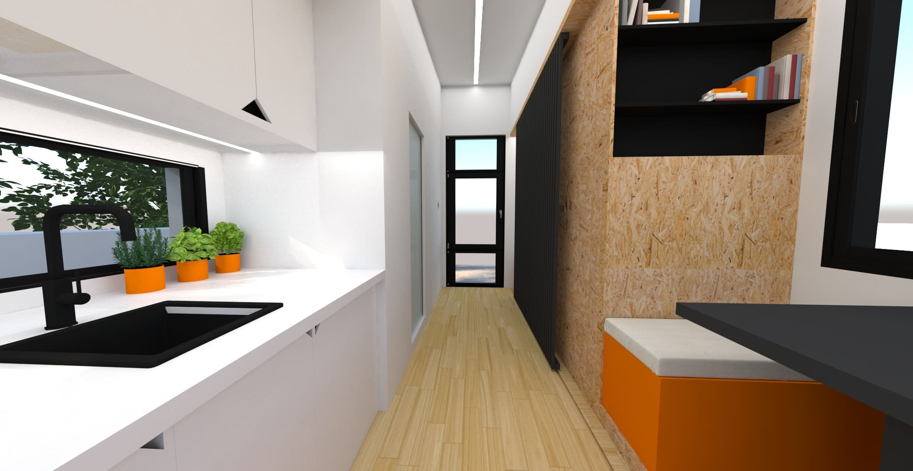
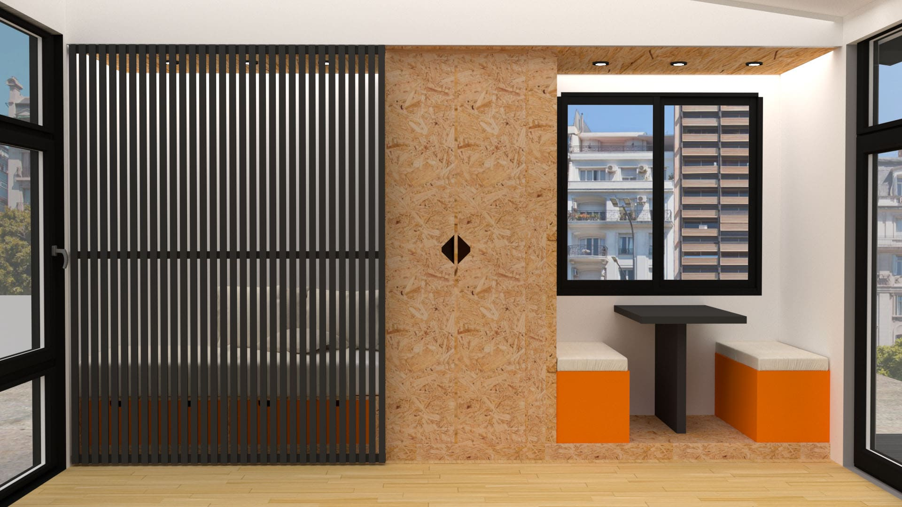

Day to day in 15m²

Reduced Space - Fulfilled life
Nowadays, it becomes more and more difficult, especially for the young generation, to find an affordable apartment to move into. This situation is especially aggravated in an urban context, such as in the city of Buenos Aires.
For this reason, a temporary solution was thought of, easy to assemble, affordable, which offers the possibility of being located even on the terrace of an existing building.
Facade
The facade was designed in a plot that brings together straight lines, as well as diagonal lines. To emphasize the diagonals even more, it was decided to change the color of the plasterboard. This also gives the feeling of two parts that come together as one.
Interior
The interior of the house has a total area of 15m² consisting of a bedroom, a dining room, a kitchen and a bathroom. The house is organized in two modules; service area and lounge area.
The service area consists of the bathroom and the kitchen, as well as a closet. The paint was kept white, to reflect more light on to the lounge area, making the space feel brighter and bigger.
The lounge area consists of a bed and a seating area. Both parts are separated by another closet. A sliding door was placed to separate both areas and provide more privacy.

Contruction
There was a lot of emphasis on an easy, affordable and fast construction during the development of the tiny house. Being thought of as a temporary solution for a person with reduced purchasing power, these aspects were very important. The construction system is steel frame, since it is currently the fastest and cheapest system on the argentinian market.